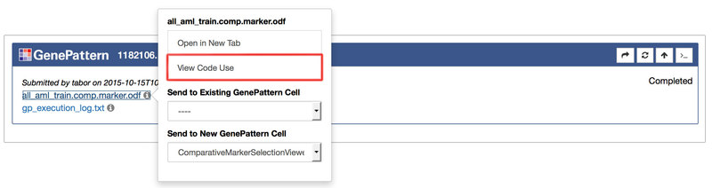
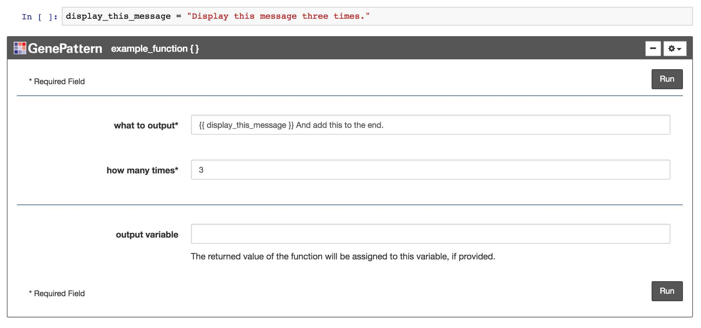
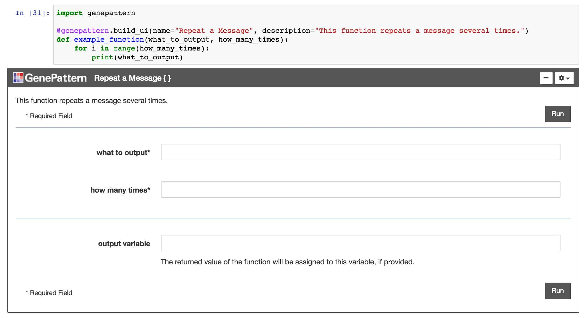
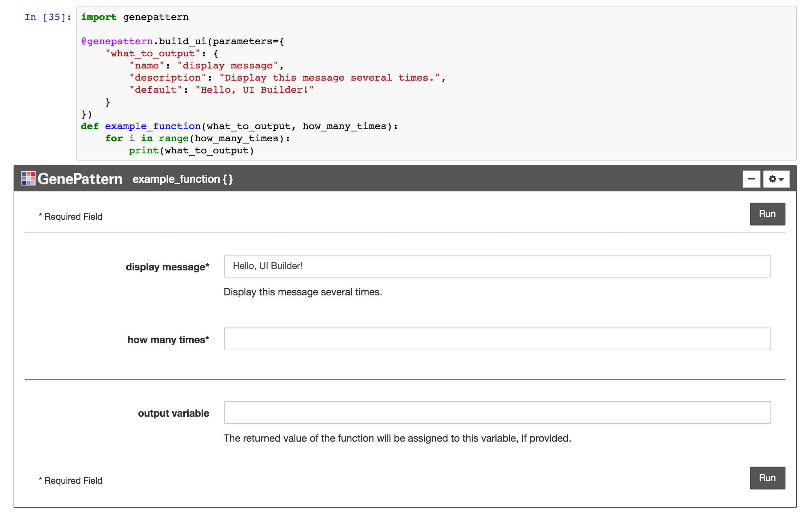
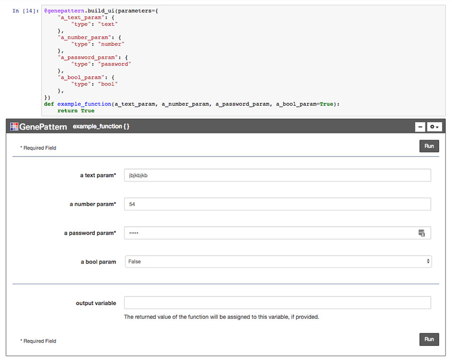
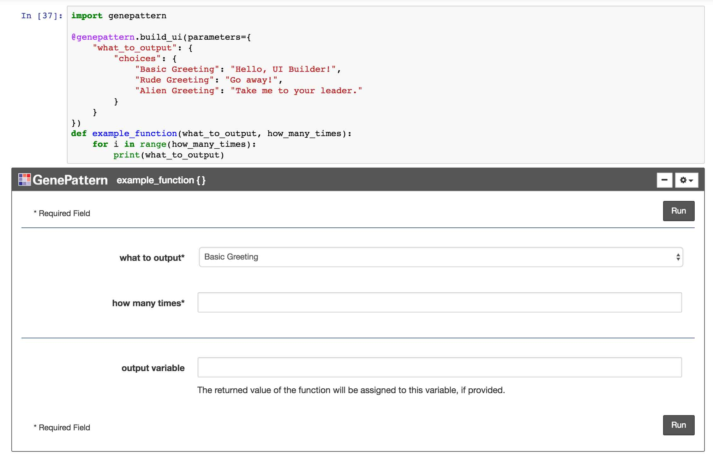
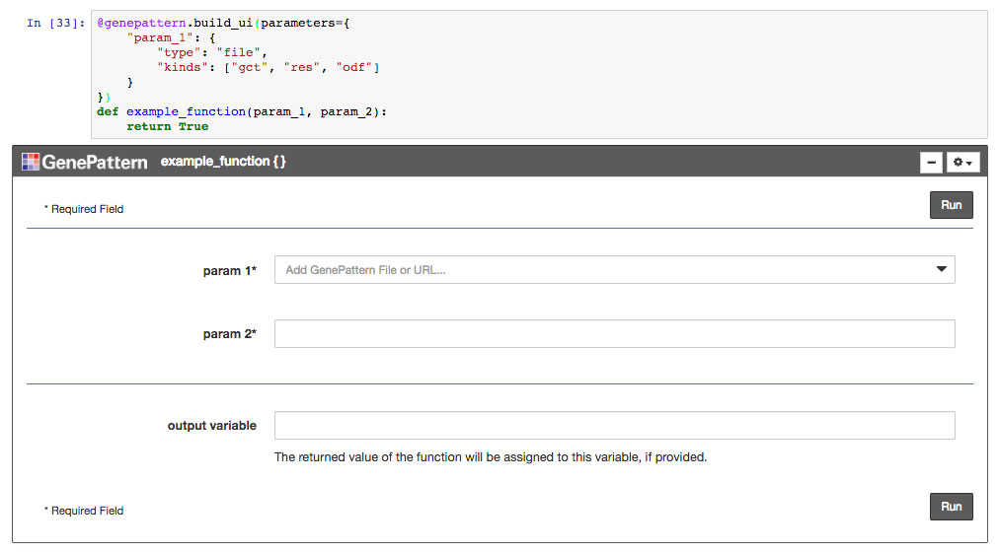

GenePattern Notebook Environment Features
Programmatic Features
In addition to the basic and publishing features intended for use by both non-programming and programming users alike, the GenePattern Notebook environment also provides a variety of features intended primarily for use by coders.
1. Code Cells
Code cells allow a user to type in execute Python code. They are the default type of cell. Simply enter the Python code you want to run and then click the (run cell) button in the notebook toolbar.
More information on code cells and their variousoptions is available in the Jupyter documentation.
2. GenePattern Python Library
A library is available for using Python to interact with available GenePattern's service. This allows a user to programmatically prepare analyses, launch jobs and retrieve results.
A complete tutorial on using the GenePattern Python Library is available as a public notebook in the GenePattern Notebook Repository. Additional information is available in our documentation.
3. Send to Code
The GenePattern Python Library seamlessly integrates with GenePattern cells. Code examples of how to reference GenePattern jobs or GenePattern result files are available in GenePattern Job Cells by clicking a job result and selecting “Send to Code” in the menu.

4. Send to Dataframe
The GenePattern Python Library also provides functionality for common GenePattern file formats, allowing them seamlessly integrate with Pandas, a popular Python data analysis library.
Both the GCT and ODF file formats are easily loaded as Pandas Dataframes. Code examples of how to load these files are available in GenePattern Job Cells by clicking a GCT or ODF job result and selecting “Send to Dataframe” in the menu.
5. Python Variable Input
As part of the seamless integration between Python and GenePattern, Python variables may be directly used as input in GenePattern Analysis Cells. To use a Python variable as input, first define the variable in a code cell, then in a GenePattern Analysis cell, enter the variable name surrounded by two sets of curly brackets. For example, using the variable foo would appear as {{ foo }}
When the Run button is clicked to launch the analysis job, the notebook will first obtain the value of the variable used as input and then send that to the GenePattern server. As the GenePattern services expect a string, non-string variables will be cast as strings when they are evaluated.
6. R Support
The GenePattern Notebook Environment supports R through the use of R magic commands. To begin using R magics, you first need to load the R magics extension. This can be achieved by running the following code within your notebook: %load_ext rpy2.ipython
After the extension has been loaded, beginning a cell with %%R will tell the notebook environment to execute the rest of the code in the cell using R rather than Python. An example is given below.
%%R
# Define a vector with 5 values and show the plot
values <- c(1, 3, 6, 4, 9)
plot(values, type="o", col="blue")
title(main="Example Plot Created With R", col.main="red", font.main=4)
7. Job Result Syntax
When specifying the input to a GenePattern analysis cell, a simple syntax can be used to select the output of a upstream job. To do this, inside double curly brackets, write the name of the GenePattern module and extension of the output file separated by a period. If multiple jobs exist in the notebook using that module, or multiple files are returned of that type, an index can optionally be specified in square brackets. Several examples are given below.
{{ PreprocessDataset.gct }}
Use the first GCT file output by the first PreprocessDataset job in the notebook.
{{ PreprocessDataset[1].gct[1] }}
This is functionally the same as the first example, but the index is made explicit for both which PreprocessDataset job in the notebook to use and which GCT file to use.
{{ PCA[2].odf }}
Use the first ODF file output by the second PCA job.
{{ FlowMeansCluster.csv[3] }}
Use the third CSV file output by the first FlowMeansCluster job.
UI Builder
The UI Builder is a way to display any Python function or method call as an interactive widget. This will render the parameters of the function as a web form.
The UI Builder will use any existing docstring for the function as a description, will infer parameter types from default values and will display parameter annotations as helpful text near each input.

1. Build the UI
The simplest way to render a function using the UI Builder is to import the genepattern package and then attach the build_ui decorator to the function's definition. A code example for this is given below:
import genepattern
@genepattern.build_ui
def example_function(first_parameter, second_parameter):
. . .Alternatively, the UI Builder widget may defined and referenced directly. To render a function in this way, simply import the GPUIBuilder class from the genepattern package and pass the function to the GPUIBuilder constructor. To display the widget, just return the GPUIBuilder object in a Jupyter code cell. A code example is provided below:
from genepattern import GPUIBuilder
def example_function(first_parameter, second_parameter):
. . .
# Create the GPUIBuilder object and immediately
# return it for display in Jupyter
GPUIBuilder(example_function)2. Python Variables & String Literals
Python variables may be used as input when filling out a UI Builder form. To do this, simply type the name of the variable into the input field. When the form is submitted, the widget will pass a reference to the variable to the resulting function call.

Conversely, to ensure that an input value is evaluated as a string literal rather than a variable name, a user can wrap the input to a particular field in either single or double quotes (' or "). This tells the UI Builder to skip checking for variable names and to treat the value in quotes as a literal string. For example, forcing the string foo to be treated as a string literal would be entered in the input field as:
"foo"
3. String Serialization
The input to a UI Builder form may include a string representation of a variable's value rather than a reference to the variable itself. This is useful for embedding the value inside a larger string, or when passing a variable reference would be unwanted.
This functionality can be achieved by placing the variable name inside double curly brackets. For example, embedding the string serialization of the variable foo would be entered into an input field as:
{{ foo }}

4. Rendering Existing Functions
Existing Python functions, such as those included in third-party Python libraries, can also be used with the UI Builder. To display an existing function first import it and then pass the function into the constructor of the GPUIBuilder object. Return this object in a cell to display the resulting widget. For example, the code for displaying scikit-learn's KMeans function is given below.
import genepattern
import sklearn.cluster
genepattern.GPUIBuilder(sklearn.cluster.KMeans)
5. Overriding Properties
By default, the widget name will be the function name, the description will be the docstring of the function and the parameter names will be the same as the parameters defined in the code. All of these, however, can be manually overridden. This is particularly useful whe providing better names or descriptions that users would find helpful.
To override the default values, optional parameters may be passed into the build_ui decorator or into the GPUIBuilder constructor. Examples overriding the widget name and description are given below.
The bottom example also demonstrates overriding the canonical name of the function being rendered. This is sometimes helpful if the function has been imported into the code in a non-top level namespace.
@genepattern.build_ui(name="Simple Example",
description="This is an example function.")
def example_function(param_1, param_2):
. . .The same effect can be also achieved when directly instantiating the GPUIBuilder object.
genepattern.GPUIBuilder(sklearn.cluster.KMeans,
name="KMeans Clustering",
description="Groups data into K clusters",
function_import="sklearn.cluster.KMeans")
6. Overriding Parameters
The names and descriptions of individual parameters may also be overridden. In this case, a dictionary may be passed to the build_ui decorator or the GPUIBuilder constructor with the parameter's name as the key and the properties to override as the value.
A code example is given below which overrides the name of a parameter, the description of the parameter and the default value of the parameter.
@genepattern.build_ui(parameters={
"param_1": {
"name": "foo",
"description": "This parameter has been renamed.",
"default": "bar"
}
})
def example_function(param_1, param_2):
. . .
7. Hiding Parameters
Sometimes a particular function has parameters that shouldn't be changed in the current context. The UI Builder has the ability to hide the input for these parameters, simplifying the user interface and allowing users to focus only on the relevant inputs. When the function is called, the hidden parameters will automatically use their default values. This may be combined with overriding the default value for the parameter in question in order to force a particular input.
A code example is given below in which several parameters of scikit-learn's KMeans implementation are hidden.
genepattern.GPUIBuilder(sklearn.cluster.KMeans, parameters={
"init": { "hide": True },
"verbose": { "hide": True },
"random_state": { "hide": True, "default": 1234 },
"copy_x": { "hide": True }
})
8. Output Variable
The result of a UI Builder function can optionally be assigned to a Python variable. By default, a text field for this variable will appear at the bottom of each UI Builder widget. This field can be overridden just like any other parameter using the output_var parameter name. This includes the ability to change the label, description, assign a default value or hide the parameter. A code example is given below.
@genepattern.build_ui(parameters={
"output_var": {
"name": "results",
"description": "The results of the function",
"default": "variable_name",
"hide": False,
}
})
def example_function(a_text_param, a_number_param,
a_password_param, a_bool_param=True):
. . .9. Parameter Types
The UI Builder supports a number of parameter types and implements features to make handling those types easier. Supported types include:
- Text: Supports any text value. Unless referencing an existing Python variable, any input gets cast to a Python string value. Text is also the default parameter type if no other type information has been specified or can be determined.
- Number: Accepts any numerical value and renders in a notebook as an HTML number input.
- Password: Works exactly like a text input, but obfuscates the input value as a password field.
- Choice: When provided with a list of choices, this input will render as a dropdown parameter, with the default value selected. Choice parameters are described in their own section below.
- Bool: A boolean input representing True and False. Renders as a choice parameter with those two choices.
- File: An input intended to receive a file or file-like object. File parameters are described in their own section below.
The UI Builder will infer a parameter's type from its default value, defaulting to a text parameter if no value is available or if the default value's type doesn't match one of the known types above. Alternatively, the developer can specify a parameter's type in the code. A code example is provided below, illustrating how to specify each type - except for choice and file parameters, which are each detailed in their own sections.
@genepattern.build_ui(parameters={
"a_text_param": {
"type": "text"
},
"a_number_param": {
"type": "number"
},
"a_password_param": {
"type": "password"
},
"a_bool_param": {
"type": "bool"
},
})
def example_function(a_text_param, a_number_param,
a_password_param, a_bool_param=True):
. . .
10. Choice Parameters
Sometimes a parameter only accepts a limited set of valid input values. This is often represented in a user interface as a dropdown (select) input. The UI Builder has support for this functionality. To change a particular parameter into a dropdown input, simply provide the parameter with a dictionary of available choices. A code example is given below.
@genepattern.build_ui(parameters={
"param_1": {
"default": "some_value",
"type": "choice",
"choices": {
"foo label": "foo value",
"bar label": "bar value",
"some_label": "some_value"
}
}
})
def example_function(param_1, param_2):
. . .
11. File Parameters
File parameters are intended to handle input representing a file or file-like object. They are integrated with GenePattern job widgets, such that available GenePattern files will appear in a menu when a file parameter is first selected, thereby allowing the user to easily select the desired file.
Optionally, the developer can specify the kinds of files that a file parameter accepts. This is accomplished by providing a list of file extension strings. For example, a parameter that expects a gct, odf or res files would list: ["gct", "odf", "res"].
It is worth noting that when a GenePattern file is selected in the menu, the value provided to the function will actually be a string containing a URL to the specified file. The developer may then take this string and use it to create a file-like object, pass it to a function that will download the file or otherwise perform any desired tasks.
A code example is provided below.
@genepattern.build_ui(parameters={
"param_1": {
"type": "file",
"kinds": ["gct", "odf"]
}
})
def example_function(param_1, param_2):
. . .